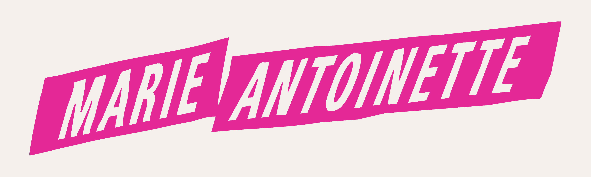

A visually rich and modern retelling of France’s most iconic queen. Directed by Sofia Coppola, the film blends historical storytelling with contemporary music and a soft pastel aesthetic.
Release Date: 2006
Director: Sofia Coppola
